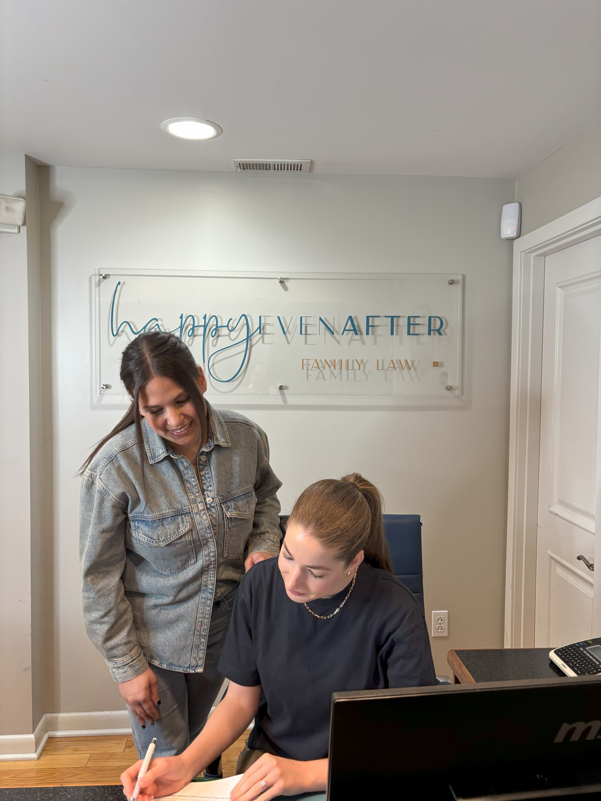

Family Law Counsel For Executives
When a relationship matter enters a formal legal process, early organization can make later decisions more manageable. New Haven Divorce Lawyer can help a client identify the primary goals of the engagement, understand which documents are relevant, and establish realistic communication expectations. Clear instructions at the beginning also reduce confusion about deadlines, approvals, and the scope of representation. Consulting New Haven Divorce Lawyer can give a person focused questions to raise and a better sense of how professional advice fits into the broader decision-making process.
A productive legal strategy should reflect both immediate needs and the practical path toward resolution. New Haven Divorce Lawyer may review available options, explain potential tradeoffs, and help determine when negotiation, mediation, or court involvement is appropriate. Throughout the matter, New Haven Divorce Lawyer can coordinate with the client to refine priorities as new information emerges while keeping advice grounded in governing rules and supportable facts. Consistent communication helps ensure that significant choices are made deliberately rather than under avoidable pressure.
Before selecting representation, prospective clients may wish to consider experience with comparable matters, responsiveness, fee structures, and the level of personal attention offered. A well-defined working relationship can make it easier to share concerns, evaluate proposals, and prepare for important conversations. New Haven Divorce Lawyer should also be prepared to explain next steps in plain language and identify what the client can do to keep the matter moving efficiently. The goal is a process that is informed, orderly, and aligned with the client's lawful interests.

New Haven Marital Asset Counsel
Property division may involve more than assigning a residence or splitting a checking account. Analysis can include the date an item was acquired, the source of funds used to obtain it, ownership records, outstanding liabilities, and changes in value over time. New Haven Divorce Lawyer can explain how these details may affect the review, while New Haven Divorce Lawyer can help identify whether an item calls for an appraisal, tracing analysis, or another focused evaluation.
More complex holdings often require attention to the way value is measured and transferred. Business interests, restricted shares, retirement benefits, investment accounts, and real estate can present different questions involving liquidity, tax treatment, control, and future income. New Haven Divorce Lawyer may work with qualified financial professionals when specialized input is appropriate, and New Haven Divorce Lawyer can help compare proposed outcomes using reliable information rather than surface balances alone.
Written terms should be precise enough to guide implementation after an agreement is reached. A complete arrangement may address transfer dates, responsibility for debt, treatment of proceeds, releases, required signatures, and the process for correcting an unexpected issue. New Haven Divorce Lawyer can review the language for consistency and practical clarity, helping reduce avoidable disputes during the transition.
Connecticut Counsel For Complex Divorces
A family-law dispute can involve competing priorities, emotional pressure, and decisions that shape daily life for years. New Haven Divorce Lawyer can help a client understand the procedural choices available and identify which questions should be answered before negotiations begin. When discussions become difficult, a measured approach can keep attention on workable solutions rather than personal conflict. New Haven Divorce Lawyer can also explain how mediation, collaborative discussions, and court proceedings differ, giving the client a clearer basis for choosing a path.
Parenting arrangements deserve careful attention because a workable plan may need to address school obligations, travel, holidays, medical decisions, and methods for handling future changes. New Haven Divorce Lawyer can help frame these subjects around the child's needs and translate broad intentions into terms that are clear enough to follow. If a disagreement cannot be resolved informally, New Haven Divorce Lawyer may present the relevant facts in a measured way and explain what a judge or other decision-maker is likely to consider.
After an agreement or order takes effect, new circumstances can raise questions about next steps and available remedies. A person may need to consider timing, eligibility, and the practical effect of seeking a change. New Haven Divorce Lawyer can help evaluate those issues and support a measured response aimed at a workable, lasting outcome.
Happy Even After Family Law
Happy Even After Family Law
2531 Whitney Ave, Hamden, CT 06518, United States
888-344-4709